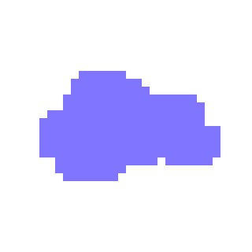
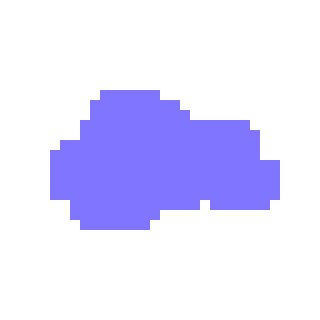

- anim sur backgroundPosition X et Y
- anim spritesheet lorsque le div contenant la spritesheet possède la classe is-running, l'image est inversée si le div possède la class reverse
- scrollTrigger
- trigger= #chapitre1
- scrub= true
- pin= true
- Timeline sur le défilement de la première spritesheet, le changement vers la deuxième (opacity: 0 sur première et opacity: 1 sur deuxième), et le déplacement du background.
Je viens de me réveiller, mais je sense qu'il y a quelque chose d'étrange avec le monde, je devrais m'assurer que tout est normal.

- anim sur x et y
- scrollTrigger
- trigger= #chapitre2
- scrub= true
- pin= true
- Timeline faisant monter les bâtiments en même temps de les faire défiler sur l'écran
- anim spritesheet lorsque le div contenant la spritesheet possède la classe is-running, l'image est inversée si le div possède la class reverse
Cette ville ne m'est pas familière, je ne sais pas comment je suis atteri ici mais je ne reconnaît rien de ce qui m'entour


- anim des autos sur l'axe des x qui n'est pas liée au scroll du chapitre
- anim des arbres sur l'axe des x, ils avancent sans être lié au scroll, mais si on termine le scroll elle se termine automatiquement, elle va à l'envers si on y retourne de plus bas dans la page, et retourne au début si on y revient de plus haut dans la page
- scrollTrigger
- trigger= #chapitre3
- scrub= true
- pin= true
- toggleActions: play complete reverse reset
Je ne sais pas comment je suis arrivé sur cette autoroute, mais heureusement, le trotoire est encore présent, même si c'est très étrange.


- anim sur l'axe des x et y sur le div contenant les spritesheets
- drawSVG de 0 0 à 0 100% sur le vent.
- scrollTrigger
- trigger= #chapitre4
- scrub= true
- pin= true
- déplacement du div contenant les spritesheets sur l'axe des x et y, pour ensuite faire apparaître la seconde spritesheet et disparaître la première, pour ensuite animer le div contenant les spritesheets sur l'axe des y.
- spritesheet de marche animée seulement lorsque le div contenant la spritesheet possède la classe is-running, la spritesheet de chute joue en continu.
J'espère que je ne vais pas tomber dans ce trou qui a été placé d'une manière très suspicieuse en traversant ce pont.


- scrollTrigger
- trigger= #chapitre5
- Parralaxe avec le background, les triangles et le personnage.
- scrollTrigger
- trigger= .chapitre5Bottom
- scrub= true
- pin= true
- Timeline faisant bouger le div contenant les spritesheet et la bulle
- morphSVG entre la bulle et le chat
Je ne pense pas que je suis supposé être capable de respirer sous l'eau, mais je ne vais pas me plaindre, je me demande ce qui se trouve plus loin.


- anim de l'opacité des nuages ainsi que leurs position y
- anim du scale du soleil
- scrollTrigger
- trigger= #chapitre6
- scrub= true
- pin= true
- anim du div contenant la spritesheet sur l'axe des y
Le ciel est d'une couleur encore plus étrange de plus près, et je ne pense pas que le soleil est sensé être de cette couleur.


 



- anim de l'opacité des nuages ainsi que leurs position y
- scrollTrigger
- trigger= #chapitre7
- scrub= true
- pin= true
- Timeline animant le div contenant les spritesheet sur l'axe des x et y et qui fait apparaître et disparaître les spritesheets dans le div au besoin
Cette colline me semble confortable, je pense que je vais aller me reposer dessus.